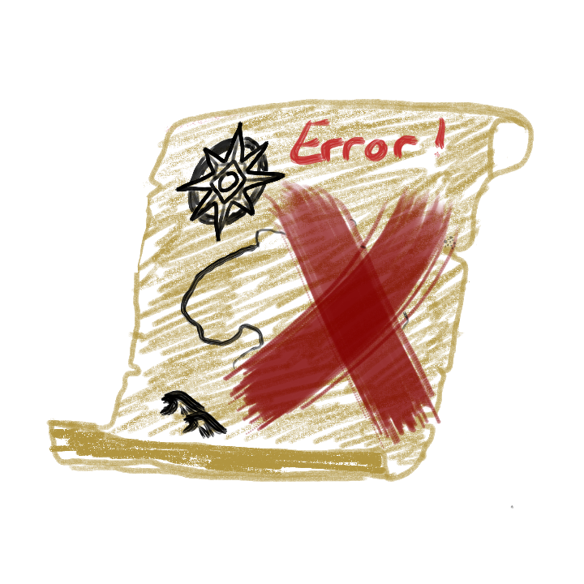

<!--
File: https://github.com/A-Level-Personal-Code-Collab/PirateGame/templates/errors/error_base.html
Project: https://github.com/A-Level-Personal-Code-Collab/PirateGame
Created Date: Tuesday, October 26th 2021, 9:59:45 pm
Description: The base file for errors
Author: Will Hall
Copyright (c) 2021 Lime Parallelogram
-----
Last Modified: Wed Oct 27 2021
Modified By: Will Hall
-----
HISTORY:
Date      	By	Comments
----------	---	---------------------------------------------------------
2021-10-27	WH	Added error base page
-->
{% extends 'base.html' %}
{% block title %}PirateGame ERROR!{% endblock %}

{% block head %}
    <!--CSS for base file-->
    <link rel="stylesheet" href="../../static/css/error.css">

    <!--Fonts-->
    <link href="https://fonts.googleapis.com/css2?family=Mate+SC&display=swap" rel="stylesheet"> 
{% endblock %}
{% block body %}
    <div id="error_header">
        
        <h1 id="error_title">Arrr. You'd be stumblin' across the red cross.<br> You best get diggin' in our documentation. There be an error.</h1>
    </div>
    <p id="error_message">{{ message }}</p>
{% endblock %}

ont-family: 


